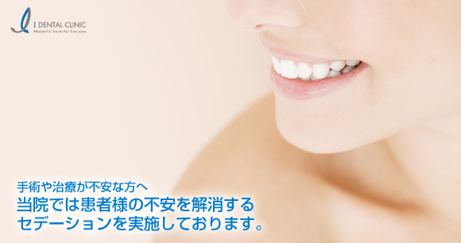
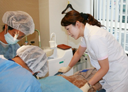

インプラントならアイデンタルクリニック トップページ > 手術や治療が不安な方へ

専門麻酔医によるセデーションなら、眠っている間に手術・治療が終わります。多くの不安要素を抱え込むことなく、快適に施術を受けることが出来ます。 ■ご注意・全身麻酔ではありませんので、手術の痛みは「お口の中への局所麻酔」によりブロックします。 ・内科などからお薬を処方されている方、妊娠中の方は事前にご相談ください |
当クリニックで、インプラント手術にセデーションを併用した患者様のアンケート結果です。
セデーションは、患者様の満足度が高い、ストレスを感じなくなる安全な方法です。 |
セデーションは併用されなくても、全ての手術中の偶発事象（心拍数の増加、血圧の上昇、心電図の変化等）には専門の麻酔医が直ちに、適切に対応いたします。 |
 |

当クリニックの医療スタッフは、全員がAHA BLS HealthCare Providerコース
（米国心臓協会認定1次救命処置者養成コース）の修了者です。
当クリニックでのセデーションは、ADA(American Dental Association米国歯科医師会)の2007年版ガイドライン1） およびASA(American Society of Anesthesiologists：米国麻酔医学会)ガイドライン2）を厳守して実施しております。
1.American Dental Association : Guidelines for the use of sedation and general anesthesia by dentists. 2007.
2.American Society of Anesthesiologists Task Force on Sedation and Anesthesia by Non-Anesthesiologists: Practice guidelines for sedation and analgesia by non-anesthesiologists.
Anesthesiology 2002;96: 1004-1017.
上記のガイドラインに従えば、セデーションの実施時には
1.治療（手術）担当者の他に『全身管理担当者（麻酔医）』を別に配置すること。
2.治療（手術）に関わる全員（手術担当者、麻酔医、アシスタント）全員がAHA BLS HealthCare
Provider（米国心臓協会認定1次救命処置者）でなければならい。
と明記されております。
アイデンタルクリニックのセデーションは、ほとんどの患者様から「快適」に「あっという間に終わる」
「手術中の出来事をほとんど覚えていない」「次回にもまた併用したい」と評価をいただいている
日本歯科麻酔学会認定医による安全かつお勧めの方法です。